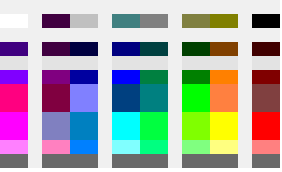
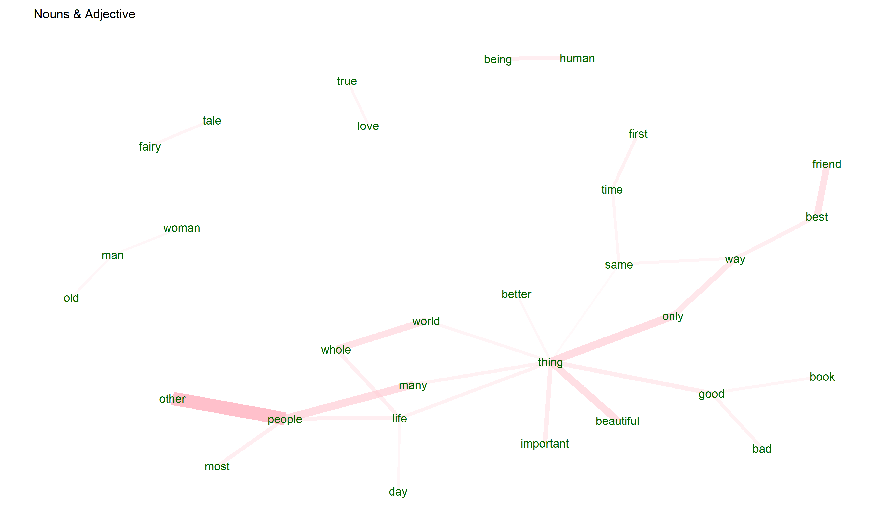

No strings attached, except for the ones you upload!

Upload your data in csv format. One column with each row representating a sentence or phrase, example below.
Comment
5 star product
Great text visualisation
Easy to use, a little slow but be patient.
Text Upload - click browse and select your file.
What is this?
Our text analysis tool helps you to learn more about what people are saying, more than just looking at the numbers or only reading the comments. We can aggregate and group words and themes in sentences to help bring out more information. It can also help to give ideas on additional areas to investigate. Common words across large sections of text or words that are often seen together are highlighted.
Why use text analysis?
You can learn a lot by what people have written, unfortunately this can take a lot of time and result in some key words being missed or lost as they are mentioned across many different comments, users or topics. Taking some of the manual effort out of this and automating it gives more time to do the important work, actionable insights and improvements based on what you have learnt.
You can upload a long list of customer comments, or a long paragraph, split by sentence into separate rows in your csv. We then run this through our system and produce the data in multiple views, lists, word clouds, cooccurrences charts, and bar charts. From this you should then see what is being mentioned most, including maybe a few topics you wouldn't expect. In uploading multiple different groups of text, for example comments in summer, vs comments in winter you can start to see how conversation is changing, what is being more important and what issues are more or less prevalent.

Recently made an important update?
You can see how this then impacts your customers, do they recognise the change, is there a change in how people use or view your product or service? Text analysis can help in all of these things. You can also see how comments and sentiment changes across markets, seasons, customer types or any other variable you can split your comments or text.